← Inštalácia · Obsah · Začíname →
Prvé kroky
Tieto kroky sú rovnaké v telefóne aj v počítači, okrem miest, kde krok uvádza inak. Zoznam Začíname v hornej časti priečinka Doručené ide rovnakými krokmi a každý odškrtne. Ťuknutím na krok otvoríte jeho časť tejto príručky. Ťuknite na × a potom na Skryť do ďalšieho spustenia alebo Už nezobrazovať. Znova ho zobrazíte v Nastavenia › Základné › Vzhľad › Zoznam › Zobraziť zoznam Začíname.
V telefóne je obrazovka príliš úzka na viac vecí naraz:
- Polica je zoznam všetkého, čo sledujete, plus Doručené, Uložené, Hľadať a Nastavenia. V telefóne je skrytá. Otvoríte ju ťuknutím na ☰ vľavo hore.
- Článok sa otvorí na celú obrazovku. Ťuknutím na ← sa vrátite do zoznamu.
- Nastavenia sú v dolnej časti police. Ťuknite na ne, potom na Základné alebo Pokročilé a potom na stránku.
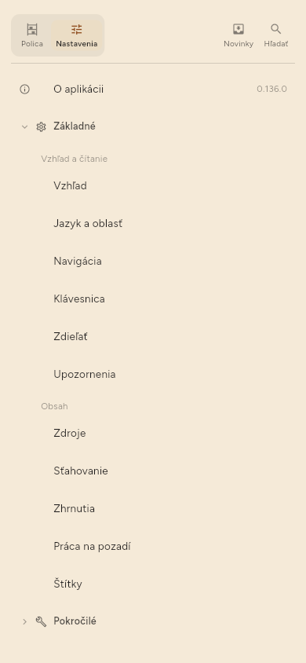
V počítači je polica vždy vľavo a článok sa otvorí vedľa zoznamu.
1. Pridajte prvý zdroj
Zdroj je čokoľvek, čo aplikácia sleduje za vás: kanál spravodajského webu, videokanál, účet na Mastodone. Kanál (feed) je zoznam nových článkov, ktorý web zverejňuje pre programy, ako je tento.
Pri prvom otvorení sa aplikácia opýta, čo vás zaujíma.
- Ťuknite na témy, ktoré vás zaujímajú, a potom na Pokračovať.
- Ťuknutím na navrhnutý zdroj ho začnete sledovať, alebo vložte do poľa adresu webu či kanála a ťuknite na Pridať. Potom ťuknite na Pokračovať.
- Vyberte Zhŕňať, čo čítam, ak má aplikácia písať zhrnutia, alebo voľbu nechajte nezaškrtnutú. Neskôr to môžete zmeniť (krok 4).
- Ťuknite na Začať čítať.
Ak chcete zdroje pridať až neskôr, ťuknite na prvej obrazovke na Zatiaľ preskočiť.
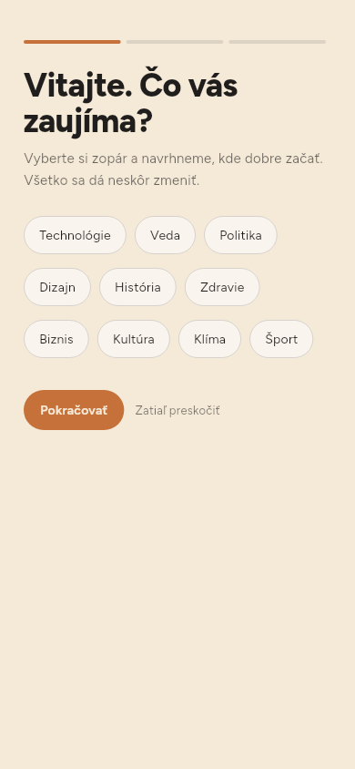
Zdroj pridáte kedykoľvek takto:
- Otvorte policu.
- Ťuknite na + vedľa Vaša polica. Otvorí sa okno Pridať odkaz.
- Vložte adresu.
- Ťuknite na Pridať. Keď je adresa zdroj — kanál, videokanál alebo autor —, okno namiesto toho ukáže Sledovať zdroj a Uložiť stránku. Ťuknite na to, čo chcete.
- Ak web ponúka výber, vyberte kanál alebo samotnú stránku. Aplikácia jednu možnosť označí ako odporúčanú.
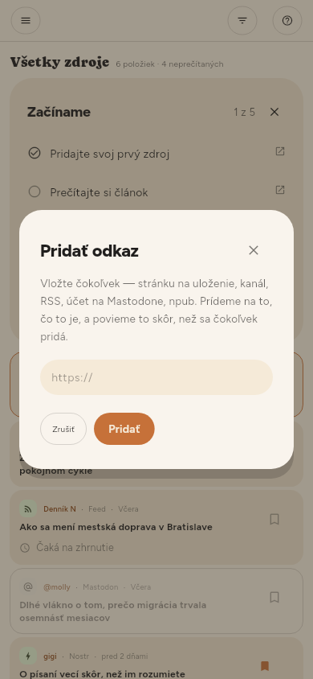
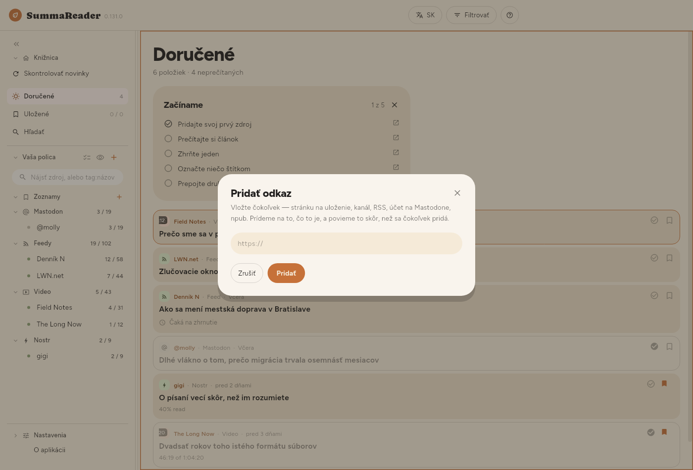
2. Skontrolujte nové články
Keď ťuknete na Začať čítať, aplikácia raz skontroluje zdroje, ktoré ste vybrali. Potom nová inštalácia kontroluje len vtedy, keď o to požiadate (pozri koniec tohto kroku). Ak Doručené ukazujú Zatiaľ nič nenačítané, ťuknite na nich na Skontrolovať novinky. Ak chcete skontrolovať hneď kedykoľvek:
- Otvorte policu.
- Ťuknite na Skontrolovať novinky pod Knižnica.
Nové články prídu do priečinka Doručené.
Kontrolu zastavíte ťuknutím na Zastaviť v stavovom pruhu dole. Tlačidlo sa zmení na Zastavujem…. V každom zdroji aplikácia dočíta článok, ktorý práve číta. Zdroje, ktoré čakajú, už nespustí. Stiahnuté články zostanú. Ďalšia kontrola začne zdrojmi, ktoré nedokončila.
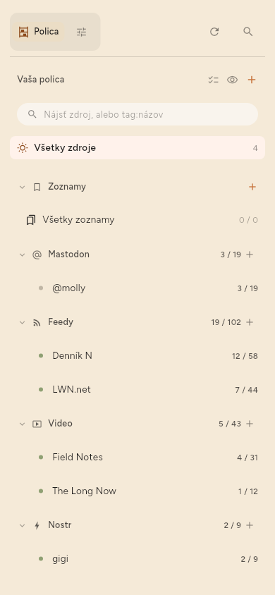
Ako často aplikácia kontroluje, zmeníte v Nastavenia › Základné › Sťahovanie › Ako často kontrolovať. Voľba Iba keď o to požiadam vypne všetky automatické kontroly.
Prvá kontrola stiahne články, ktoré zdroj práve ponúka. Pre vás nie sú nové, preto ich aplikácia automaticky nezhŕňa. Zhŕňa iba články, ktoré prídu po pridaní zdroja.
3. Prečítajte si článok
- Ťuknite na článok v priečinku Doručené.
- Prečítajte si ho. Článok má dole tri karty: Zhrnutie, Zdroj (celý text) a Podrobnosti.
- V telefóne sa ťuknutím na ← vrátite do zoznamu.
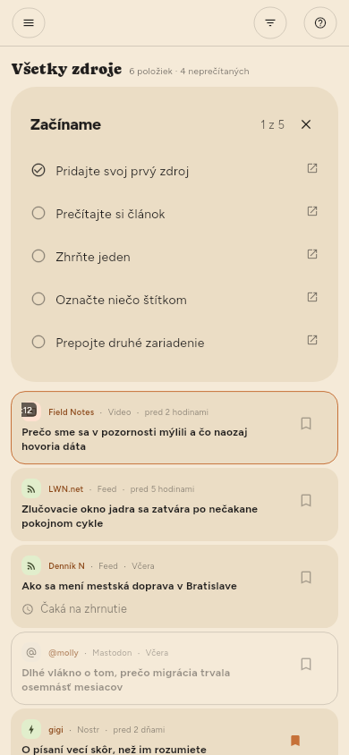
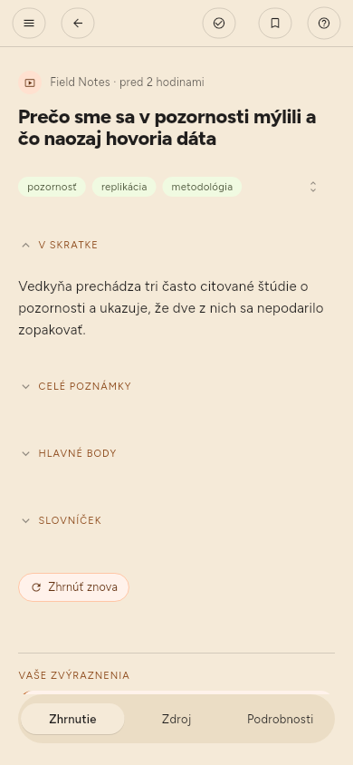
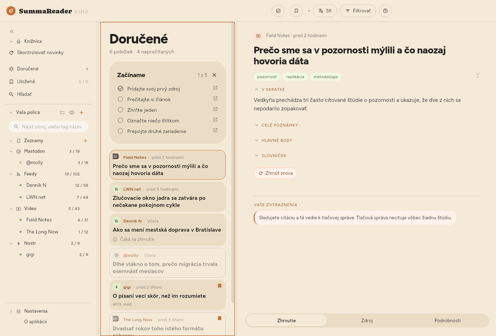
4. Zapnite zhrnutia a vyberte, kde budú bežať
Zhrnutie píše model: program, ktorý prečíta článok a napíše jeho krátku verziu. Model beží na jednom z dvoch miest.
- Toto zariadenie — model beží vo vašom telefóne alebo počítači. Nič neopustí zariadenie. Model stiahnete raz. Zhrnutia v zariadení sú pomalé: niekoľko minút na každú časť článku a v starších telefónoch a tabletoch oveľa dlhšie.
- Vzdialený LLM — článok ide na server, na ktorom beží model: na váš vlastný alebo na platenú službu. Server je oveľa rýchlejší. Je to jediný prípad, keď text článku opustí vaše zariadenie.
Nastavenie:
- Otvorte Nastavenia › Základné › Zhrnutia › Zhŕňanie › Zhŕňanie a skontrolujte, že je zapnuté.
- V Nastavenia › Základné › Zhrnutia › Zhrnutia vytvára vyberte Toto zariadenie alebo Vzdialený LLM. Keď prvýkrát vyberiete Toto zariadenie, aplikácia vás upozorní, že zhrnutia tu sú pomalé. Zhrnutia pokračujú na pozadí, kým čítate.
- Pre Toto zariadenie: otvorte Nastavenia › Pokročilé › Model v zariadení › Nájsť model, vyhľadajte a stiahnite model. Potom v Nastavenia › Pokročilé › Model v zariadení › Modely v tomto zariadení ťuknite vedľa neho na Spustiť.
- Pre Vzdialený LLM: otvorte Nastavenia › Pokročilé › LLM server › LLM server. Vyplňte Adresa, Model a, ak ho server vyžaduje, kľúč API. Ťuknite na Otestovať.
- Otvorte článok a ťuknite na Zhrnúť.
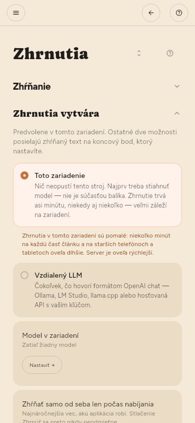
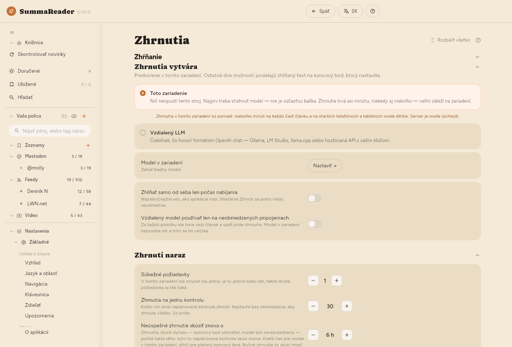
V Premium vie aplikácia nové články zhŕňať aj automaticky, po každej kontrole. Zapnite Zhrnúť v nastaveniach zdroja (pozri Správa zdrojov).
5. Označte niečo štítkom a uložte to do zoznamu (len Premium)
Štítky a zoznamy sú v Premium.
Štítok je slovo, ktoré dáte článku alebo zdroju, napríklad linux. Zhrnutie štítky navrhuje.
- Otvorte článok.
- Pod názvom ťuknite na navrhnutý štítok, čím ho prijmete, alebo ťuknite na ceruzku (Upraviť štítky) a napíšte vlastný.
Zoznam drží články pohromade. Uložené je prvý zoznam.
- Otvorte článok.
- Ťuknutím na záložku hore ho uložíte do aktuálneho zoznamu.
- Ak chcete iný zoznam, podržte záložku a potom vyberte zoznam alebo vytvorte nový.
6. Spárujte druhé zariadenie
Synchronizácia udržiava vaše zariadenia v súlade: čo ste prečítali, čo ste uložili aj samotné články. Potrebuje synchronizačný server, ktorý prevádzkujete sami. Server ukladá iba zašifrované údaje a vašu knižnicu prečítať nedokáže.
Server si stiahnite z jeho stránky s vydaniami; Získanie servera hovorí, ktorý súbor vziať.
Na prvom zariadení:
- Otvorte Nastavenia › Pokročilé › Synchronizácia › Synchronizácia.
- Zapnite Držať moje zariadenia v súlade.
- Vyplňte Adresa servera a Token zariadenia. Oboje vám dá server.
- V Nastavenia › Pokročilé › Synchronizácia › Ďalšie zariadenie ťuknite na Vytvoriť kód. Aplikácia zobrazí QR kód a ten istý kód ako text.
Na druhom zariadení:
- Nainštalujte aplikáciu a otvorte Nastavenia › Pokročilé › Synchronizácia › Synchronizácia.
- Zapnite Držať moje zariadenia v súlade.
- Pod Alebo sa pripojiť pomocou kódu ťuknite na Skenovať a namierte fotoaparát na QR kód. Na zariadení bez fotoaparátu vložte do poľa textový kód. V Linuxe môže kód naskenovať webkamera.
- Ťuknite na Použiť kód.
Kód nesie kľúč k vašej knižnici. Ukážte ho iba vlastnému zariadeniu a po dokončení ho zatvorte.
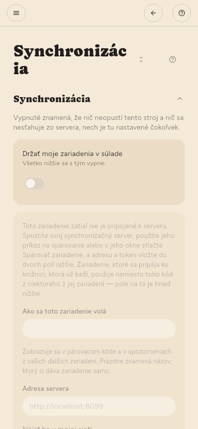
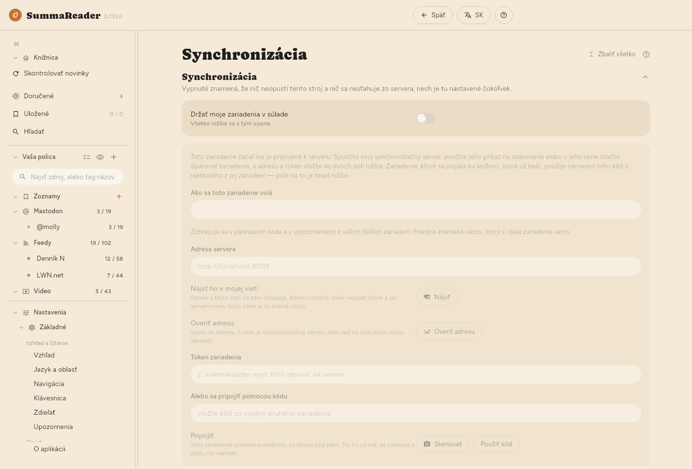
7. Vytvorte obnovovací kód
Obnovovací kód je jediná cesta späť k vašej knižnici, ak stratíte všetky spárované zariadenia. Nikto vám ho nemôže vytvoriť znova.
- Otvorte Nastavenia › Pokročilé › Synchronizácia › Obnovovací kľúč › Obnovovací kód.
- Ťuknite na Vytvoriť.
- Kód si zapíšte. Uložte ho na miesto, ku ktorému sa dostanete, aj keď toto zariadenie už nebudete mať. Aplikácia ho zobrazí raz a kópiu si neuchováva.